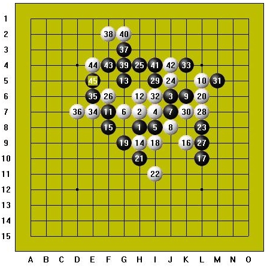
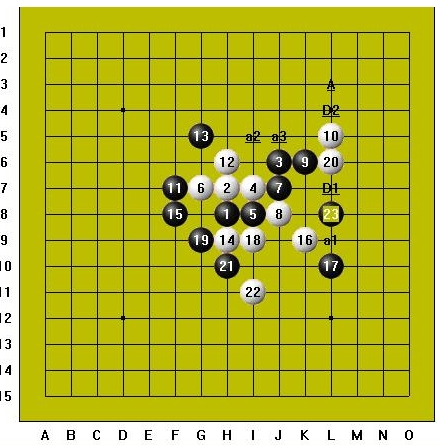

破除神之迷信――中村茂名人战一局评
首页
五子棋教室
#1 破除神之迷信――中村茂名人战一局评 作者：小丸.net 发表时间：2008-6-17 14:03:57
忙里偷闲，在爱五子棋网上欣赏中村茂的对局，粗看之下，甚为赞叹，简直可以用“华丽”来形容，以下为他疏星执黑与河村典彦名人战的一局实战对局：

15手很有意思，或许是中村已经算到19，21的唯一防了吧，才走的如此激烈，也符合中村式的风格，并且在对方的进攻中进行牵制性的防守，河村不甘示弱，行棋至22手白做V，此时黑已没有先手23防到了里面，如果防J10，白两步：L9，K10后形成必胜。下面分析这个中村走的L8的23手，见下图：

到这里，白24有杀吗？在中村的计算中，白应该是没有的！而黑石大师却算出杀了-_-,24手跳A点，白防中间，a3点必胜，因为可以利用到a1点抓33；白防下面，a2点必胜，因为D2点又保留了一个冲四点。白棋的杀利用了上下两处，非常巧妙，而A点以及之后的a1,a2,a3的选择也很巧妙和隐蔽，次序和选点错一点都无杀了，一般人的计算力要把这个局面终结确实也不容易，实战河村大概没算清楚吧，24直接走了a3，之后中村就很happy的一路表演下去直到取胜~~
两年前看过河村写的连珠哲学一文，其中有一段：[高段者になっても落としはなくなりません。しかし、落としでけることは非常に悲しいものがあります。私もＡリ`グや挑槭趾悉い扦弦皇忠皇殖笥のふたを]めます。落としをしないように今一度_Jしてから打つくせをつけるためです。]简译来即是：成为高段者也不要漏看，漏杀而输是非常悲哀的。
不过要真的做到真的不容易，即使是作者本人。可是换言之，谁能做到真的没有遗憾呢？我们只能尽力而为，中村被誉为连珠之神，可“神”并不完美，“神”也会漏算,不需要迷信~~如果是他算到必胜但料定河村算不出才这样赌博的话，那也太可怕了吧-_-||
#2 Re:破除神之迷信――中村茂名人战一局评 作者：五子天下 发表时间：2008-6-19 15:03:48
很有意思，可惜不是很懂~